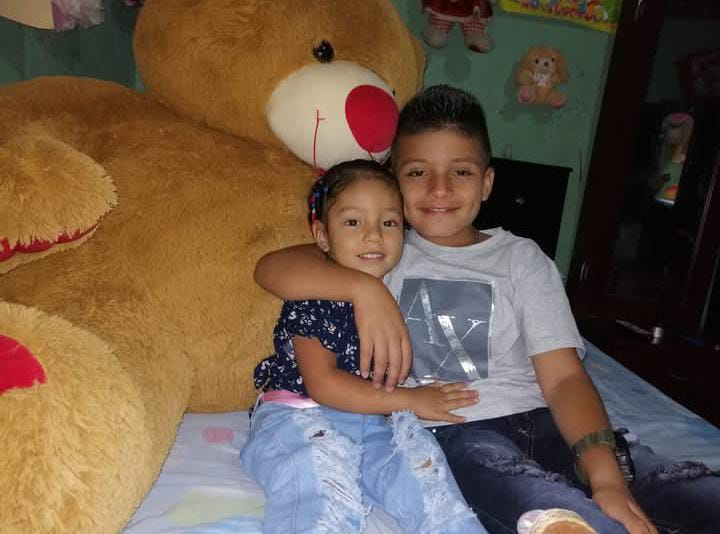
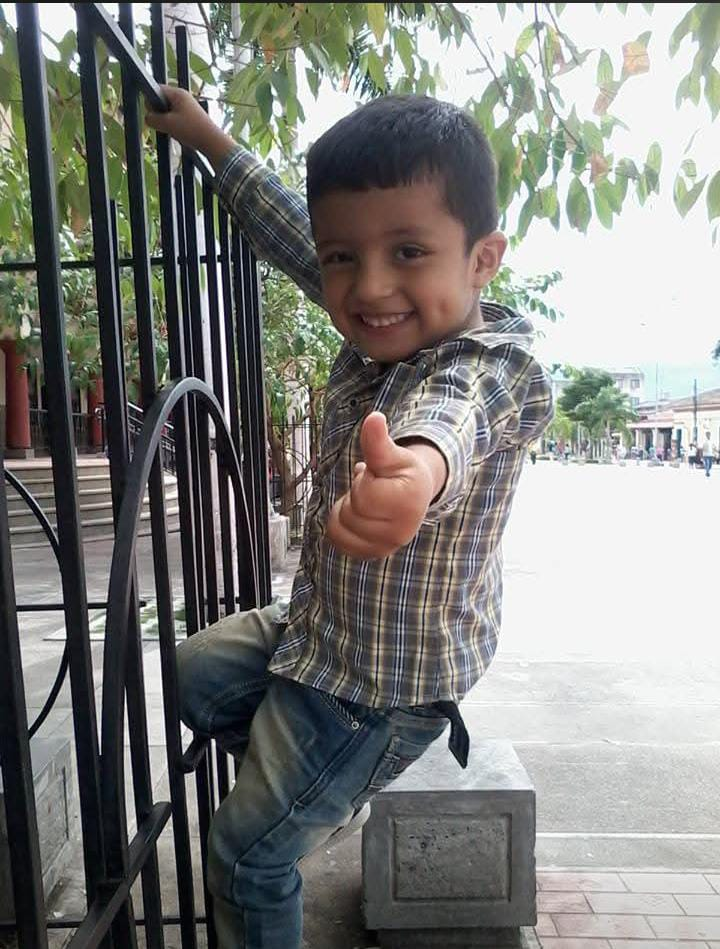
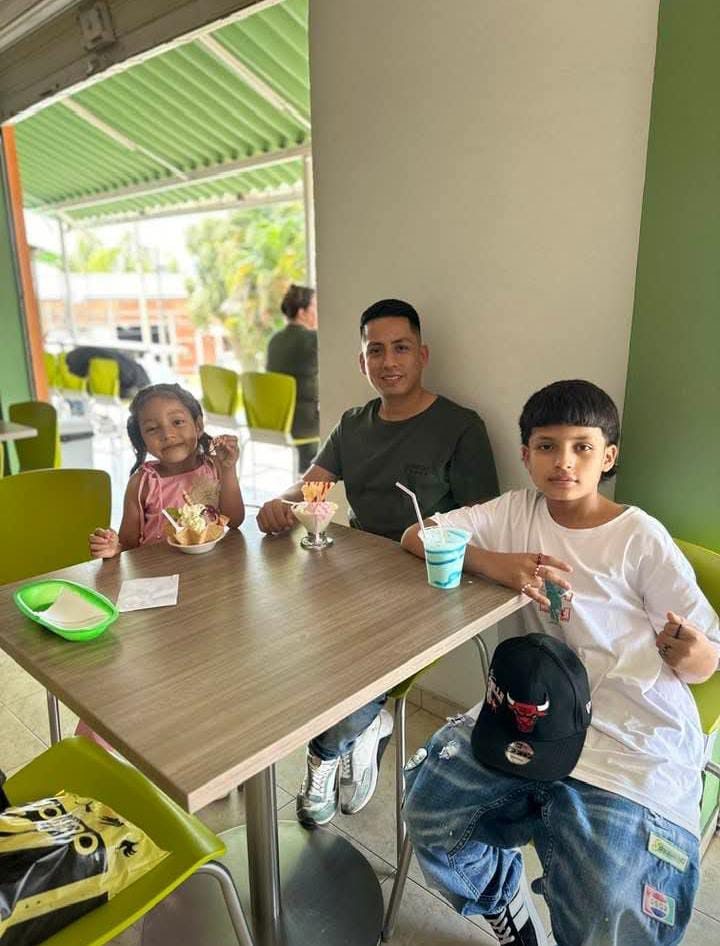
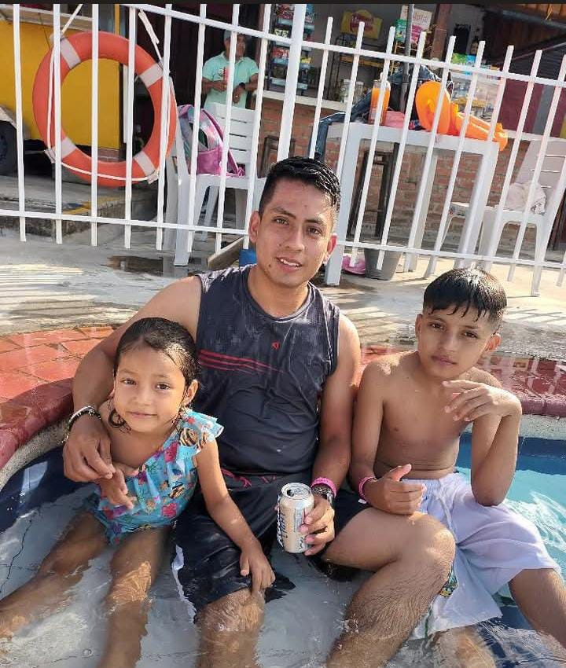
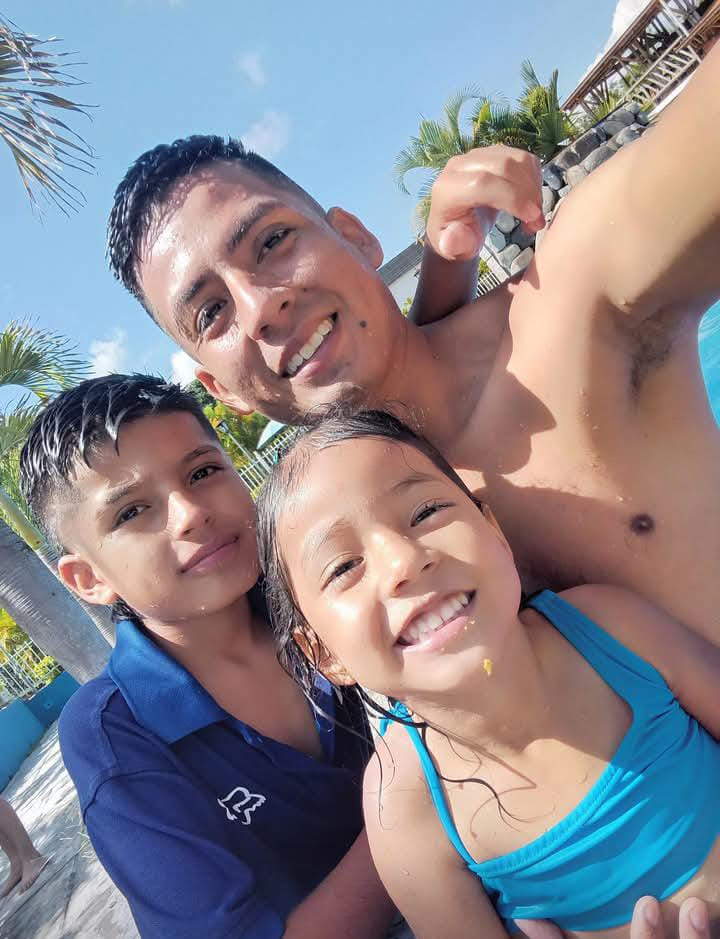
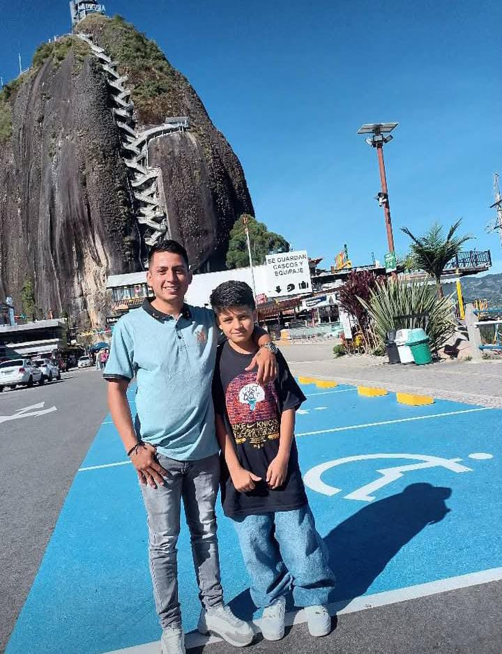
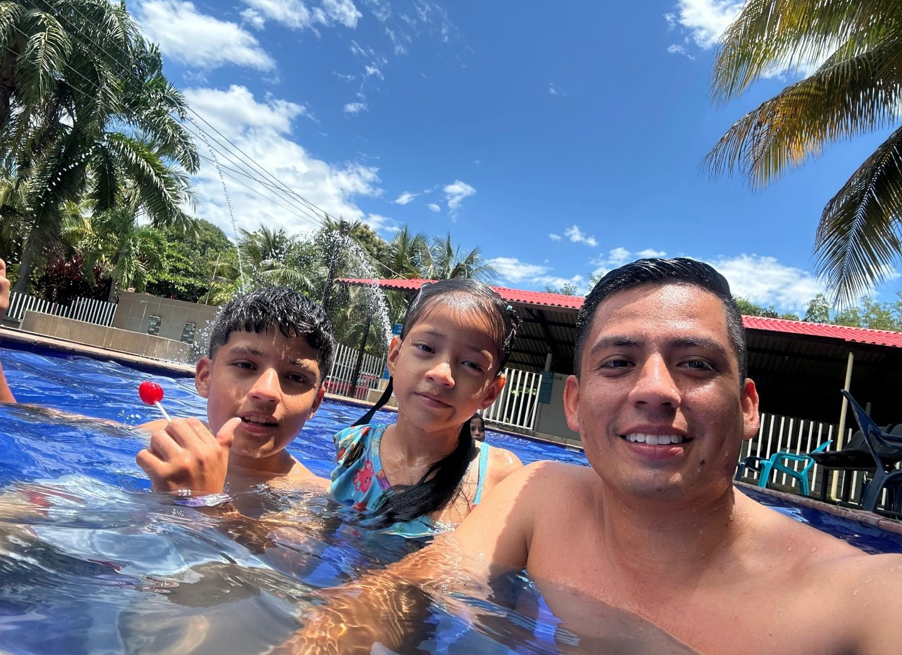

Mis recuerdos contigo
Para el mejor papá que la vida pudo regalarme.

✦Papá:
Quiero que nunca olvides que fuiste, eres y siempre serás el mejor papá que la vida pudo regalarme.

✦Gracias por criarme, por estar conmigo desde mis primeros pasos, por verme crecer y enseñarme tantas cosas. Gracias por cada esfuerzo, por tus consejos, por tus correcciones y, sobre todo, por darme tanto amor. Si algo hiciste durante todos estos años fue entregarte por completo para vernos felices y hacer de nosotros buenas personas.

✦¿Sabes algo, papá? Mientras estuve contigo fui el niño y el muchacho más feliz del mundo. Tuve la fortuna de crecer a tu lado, de compartir mis días contigo y de tener un papá que siempre procuró darme lo mejor. Me llevo nuestros paseos, las risas, las conversaciones, las travesuras y esos momentos sencillos que hoy se convierten en los recuerdos más valiosos de mi vida.

✦Por eso quiero pedirte algo: no permitas que la tristeza de mi partida te haga olvidar la felicidad de mi vida. No te preguntes una y otra vez qué más pudiste haber hecho. Me diste tu amor, me criaste, me acompañaste y llenaste mis días de motivos para sonreír. Me fui conociendo tu amor, con la fortuna de haber tenido un papá que hizo de mi vida una historia llena de momentos felices. Ojalá puedas mirar hacia atrás y sentir orgullo de todo lo que construimos juntos.

✦Quiero que me recuerdes con alegría, que cuentes mis historias, que sonrías al recordar mis ocurrencias y que mi nombre siempre esté acompañado de los momentos bonitos que compartimos. Mi historia contigo merece ser recordada con amor, no solamente con lágrimas.

✦También quiero pedirte que cuides mucho de Victoria. Abrázala, juega con ella, acompáñala mientras crece y hazla muy feliz. Tú sabes cuánto la quiero y lo especial que fue compartir mi vida con ella. Fuimos compañeros de aventuras, de juegos y de tantas travesuras. Cuéntale nuestras historias, recuérdale cuánto la amaba y ayúdala a conservar esos recuerdos tan bonitos de su hermano.

✦Y tú, papá, sigue adelante. No dejes de soñar, de sonreír ni de disfrutar la vida. Permítete llorar cuando me extrañes, porque no tienes que ser fuerte todos los días, pero tampoco dejes de vivir. Todavía tienes muchos momentos por compartir, abrazos por dar y una pequeña que necesita de tu amor y tu compañía.
Si pudiera volver a elegir quién sería mi papá, te elegiría a ti, una y mil veces. Gracias por haberme dado una vida en la que nunca me faltó lo más importante: sentirme amado por ti.
Te amo infinitamente, papá. Cuida de Victoria, cuídate mucho y nunca dejes de recordar lo felices que fuimos.
Una melodía para nuestros recuerdos
Porque hay amores que ni el tiempo ni la distancia pueden borrar.
Con amor, para siempre. 🕊️